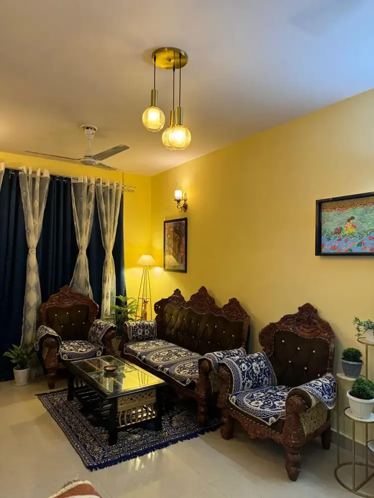
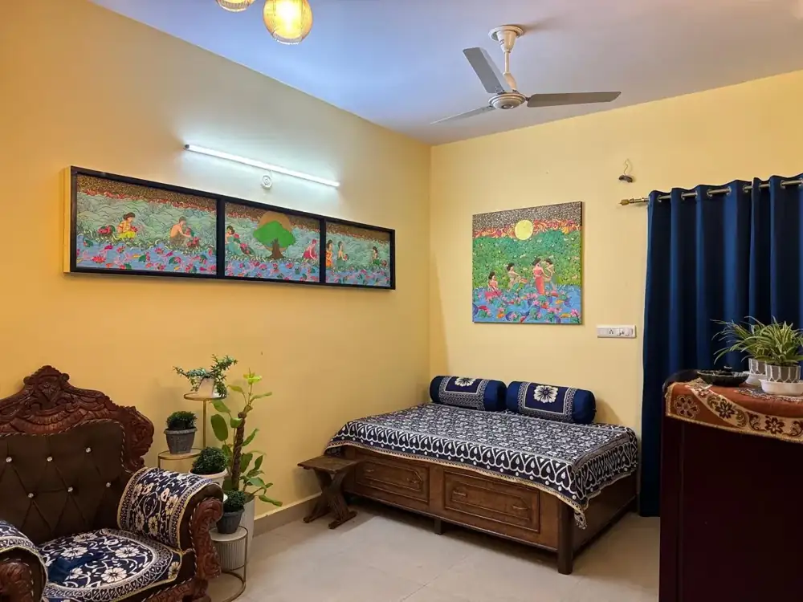
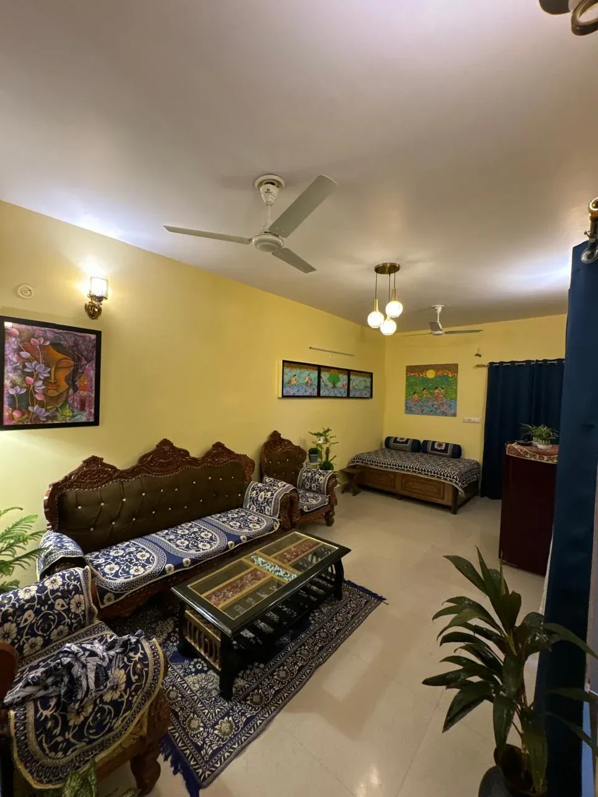
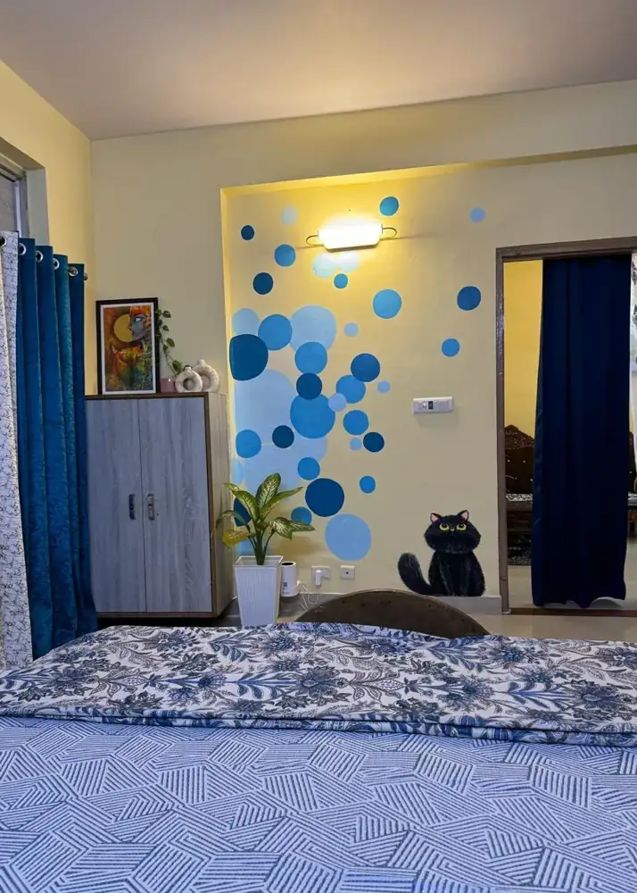
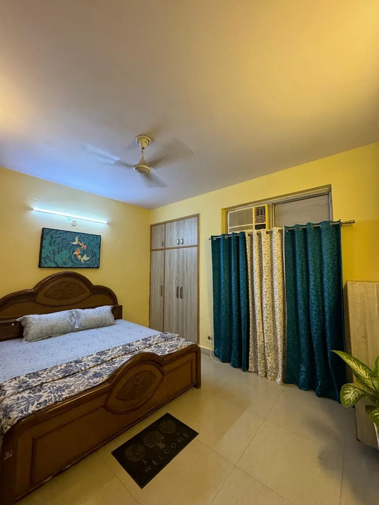
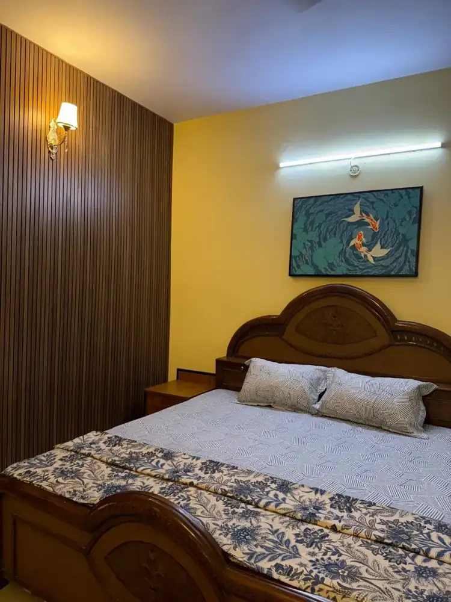
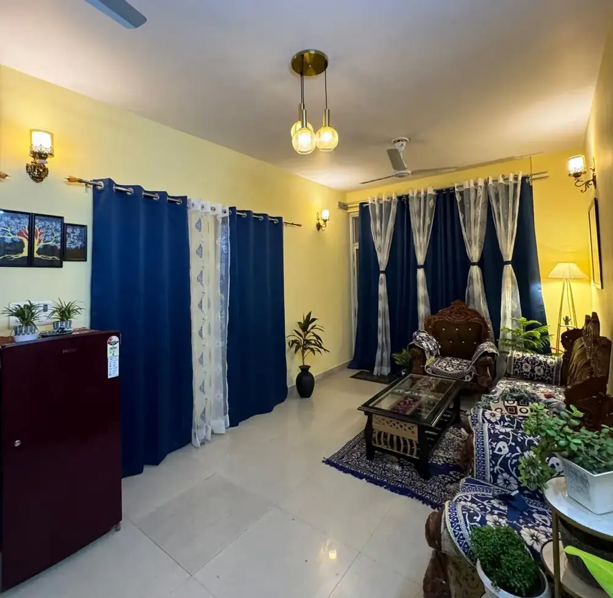
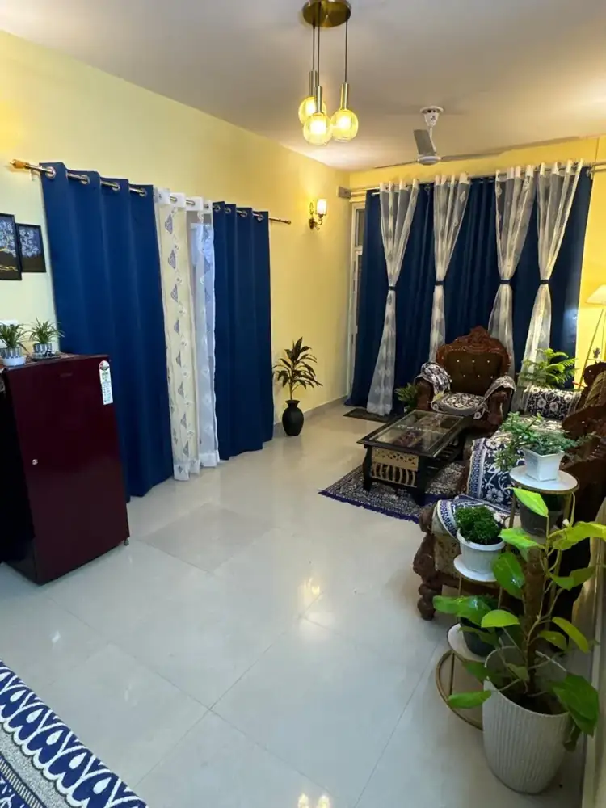
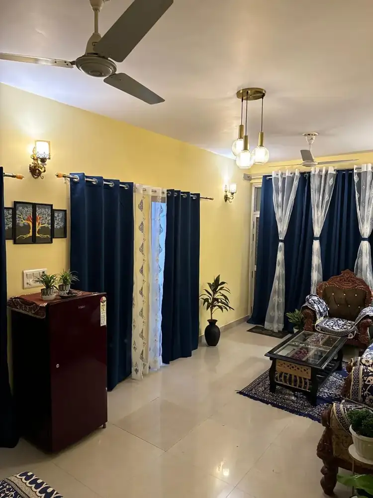
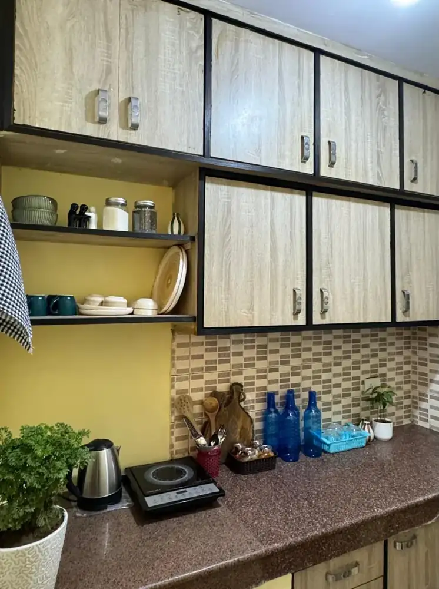

Framed paintings, handmade details and painted corners in real rooms.
Art in your home
Framed sets, painted corners and full wall murals in a real family home — including a blue-bubble wall with a very pleased black cat.










Photos and a video-still from a home tour shared by her family. Want your walls to look like this? Soni takes wall-art and painting requests.